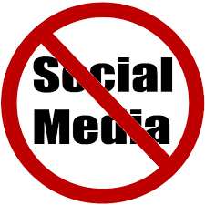

24 Timer Uten Sosiale Medier
- Dette skjedde Torsdag 3.11.2017. Vi hadde fri fra skolen fordi det var Lesohto dag så jeg sto ikke opp før 11.30. Jeg
spiste frokost så gikk jeg ut for å rakeløv som jeg gjorde for å tjene penger. Jeg raket løv helt til 15.30. 15.30 Jobbet jeg med biologi i
noen timer helt til jeg spiste middag. Etter Middag spilte jeg video spill alene og jobbet mer med biologi helt til jeg la meg.
- Jeg bruker ikke sosiale medier så mye, men du merker det litt på at når du kjeder deg og ser etter noe å gjøre så kan du ikke bare
gå på sosiale medier. Det er en merbar forskjell, men ikke veldig vanskelig for meg.
- Ja, kanskje vis jeg er på telttur eller noe sånt og vil ha full disconnet fra den digitale verden kan det være fint å unngå
sosiale medier.
- Jeg bruker sosiale medier egentlig som en tidsfordriv. Jeg bruker kun sosiale medier når jeg ikke har noe å gjøre. Men det er også fint
å kunne ha alle chatter med venner organisert sånn som på Messenger. Det påvirker nok hverdagen min negativt at jeg kaster bort tid
jeg kunne brukt på skolearbeid eller andre produktive ting på å se på sosiale medier.